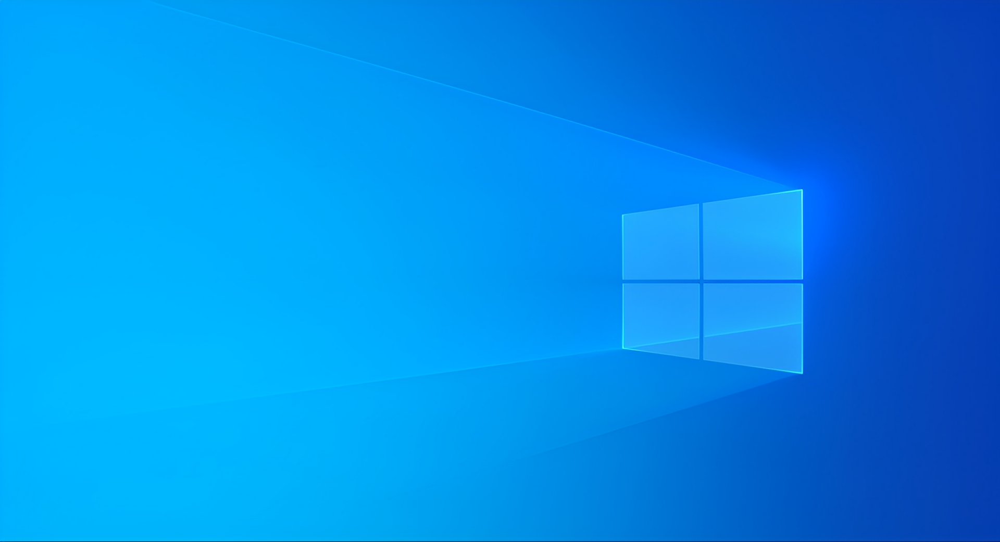
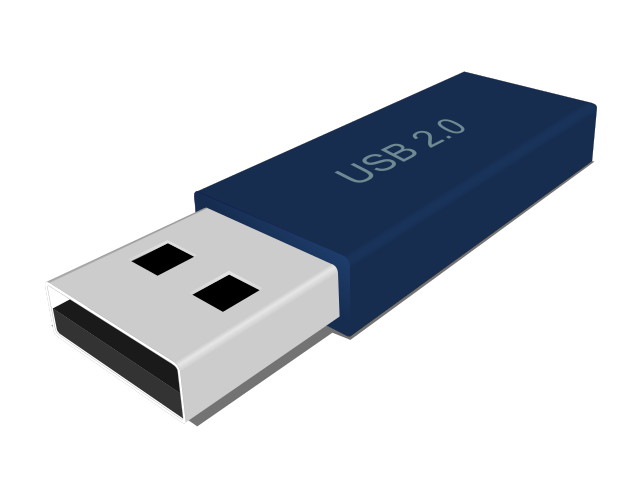

Reciclagem

Rufus
Rufus
Sitemas Operativos
Zorin-OS
lubuntu
kali-linux
debian-11
ubuntu
xenialpup
TinyCore
bodhi
Esquema de Partição
MBR
GPT
PRONTO
INICIAR
Reiniciar
Asus
In Search of Incredible
Press F8 to boot-menu
Please select Boot Device
Windows Boot Manager (P0: TOSHIBA *********) (HDD)
UEFI: SanDisk (PENDRIVE)